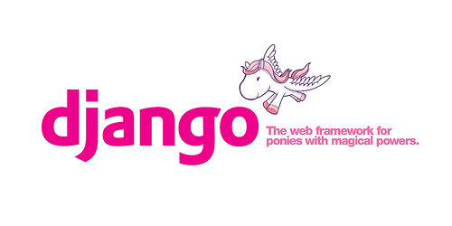
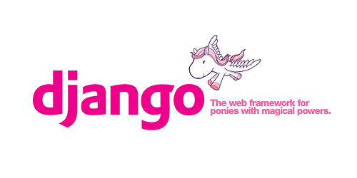

Javascript keretrendszerek a gyakorlatban
Kik is vagyunk?
 


Egy kis motiváció...
avagy
"Miért akarunk mi JavaScript-ben bármit is fejleszteni?"
Minek fejlesztenék JavaScript-ben, amikor...
- már nagyon jól ismerek egy másik nyelvet?
- nem is igazi programozási nyelv?
- nem is igazi objektum orientált nyelv?
- csak csilli-villi animációkat csinálnak benne?
- csak a baj van vele?
A JS jó részei
- Nagyon megengedő nyelv
- Hihetetlenül gyors mértékben fejlődik
- Sok felhasználó = sok library és könnyű segítséget találni
- Douglas Crockford:
In JavaScript, there is a beautiful, elegant, highly expressive language that is buries undera steaming pile of good intentions and blunders.
A gyakorlatban
- Sok nagyméretű projekt
- Sok libary ami megkönnyíti a kód összekötését a backenddel
- A webapplikációk gyors elterjedése
- Szinte mindenki képes JS-et futtatni a gépén
Megnőtt az igény a komplex webapplikációk iránt. Ezeknek a gyors fejlesztéséhez és könnyű karbantartásához azonban szükségünk van egy kis segítségre:
MVC
MVC
A back-end oldalról ismerős lehet, de a kliens oldali és a backend oldali MVC általában nem egyezik meg.
A frameworkok-ben általában megtalálható Model és View, de a View nem a klasszikus szerepét tölti be, és kevés helyen van Controller, ezért hívjuk ezeket inkább MV* frameworkoknek
MV*
Néhány elem megtalálható az MV* frameworkok többségében.
Ezek:
- Model: Tárolja az adatszerkezeteinket
- View: UI és interakció
- Collection: Modellek egy csoportja
- Router: Az URL-eket képezi le az egyes funkciókra
Frameworkok összehasonlítása
Ha ennyi féle MV* framework van, hogyan választhatom ki a nekem megfelelőbbet?
Az egyszerűbb programokat szinte bármelyik népszerűbb MV* segítségével elkészíthetjük, de van pár tényező ami befolyásolhatja a döntésünket:
- Dokumentáció minősége
- Mennyire mature a framework?
- Teszteltség és tesztelhetőség
- Hogy néz ki a kód?
TODO MVC
Hivatalos oldal | Github oldal
Ugyanaz az applikáció, de más frameworkokkel + jQuery + vanilla JS
Az alapvető különbségeket jól lehet látni
De mi van, ha ennél is többre vagyunk kíváncsiak?
Napimenü
Szerettük volna tudni, melyik JS framework alkalmas az egyik projektünkre.
A TODO MVC által bemutatottak sajnos kevésnek bizonyultak. Amire nekünk szükségünk lett volna még:
- Dinamikusan változó nézetek
- Szinkronizáció a backenddel
- Könnyű karbantarthatóság
jQuery
Nem kell nekünk semmilyen framework, meg tudom én ezt írni jQueryvel is!
De kell!
- Össze-vissza callback kódok
- Minden 1 fájlban
- Nehéz karbantartani a templateket
- Nehéz a DOM-ot szinkronban tartani a "modellünkkel"
- Rémálom karbantartani
Knockout
- Nincs dependency
- 2-way data-binding
- MVVM pattern
- Atomata UI refresh
- Beépített templating
- Nagyon jó tutorial
- A modellek kezelése nem jól megoldott
Backbone-Marionette
Honlap | Marionette | Napimenü github
Backbone
- Minimalista MV* framework
- Gyorsan tanulható
- Sok döntést a userre hagy
Marionette
Különböző, gyakran használt elemek megvalóítása a Backbone-hoz.
- Eseménykezelés
- Különböző, gyakran használt view típusok
- Modulok kezelése
- Viszonylag sok depenency
AMD
Aszinkron modul definíció | Require.js
- Hova rakjuk a script taget, hogy az biztosan betöltődjön?
- Szeretnénk szétbonani a kódot több fájlra, de mi van, ha az egyik kód a másikra épül?
- Jó lenne, ha nem szennyeznénk a global namespacet
AMD (folyt.)
Ilyenkor jön jól az AMD. A kódot több modulra darabolhatjuk, és ezek között megadhatunk függőségeket is.
Az egész app indítása egy main.js fileból történik, így könnyebb átlátni a program működését, a modulok karbantartása pedig sokkal egyszerűbb, mint 1 db hatalams fájlé.